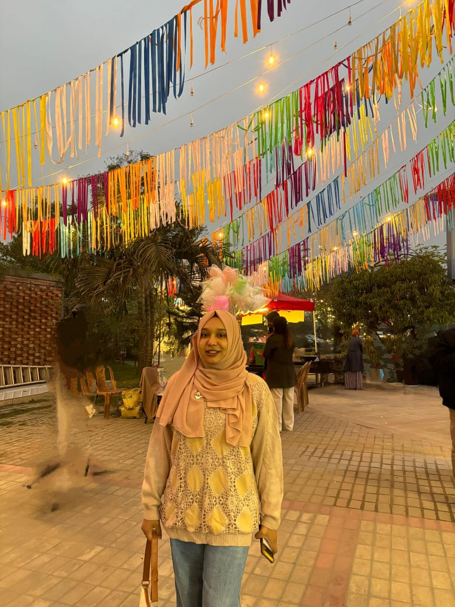

Drone-Based Infrastructure Detection
IEEE ICECE 2024 computer vision research using original drone imagery, manual annotations, and comparative object detection experiments.
I'm a Computer Science and Engineering graduate from BRAC University and a System Engineer specializing in Platform Infrastructure & DevOps. My interests include software development, computer vision, machine learning, and the systems that keep applications dependable.

Programming, frontend development, and applied computing technologies used across academic projects and research.
Academic software and research work with source materials and project documentation.
IEEE ICECE 2024 computer vision research using original drone imagery, manual annotations, and comparative object detection experiments.
A PHP and Laravel school administration project covering academic records, class organization, scheduling, and application workflows.
CNN-based academic research exploring NLP text classification and evaluation on a labeled social-media dataset.
For academic collaboration, research discussions, and professional connections, reach me through these channels.